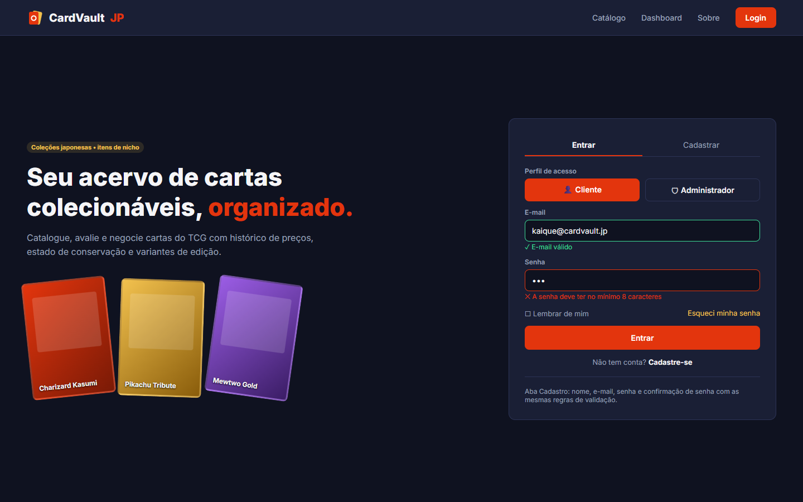
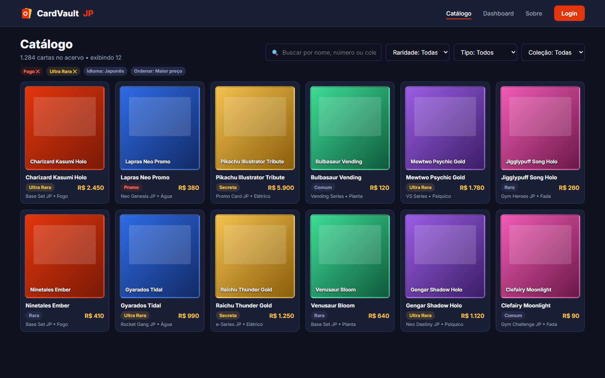
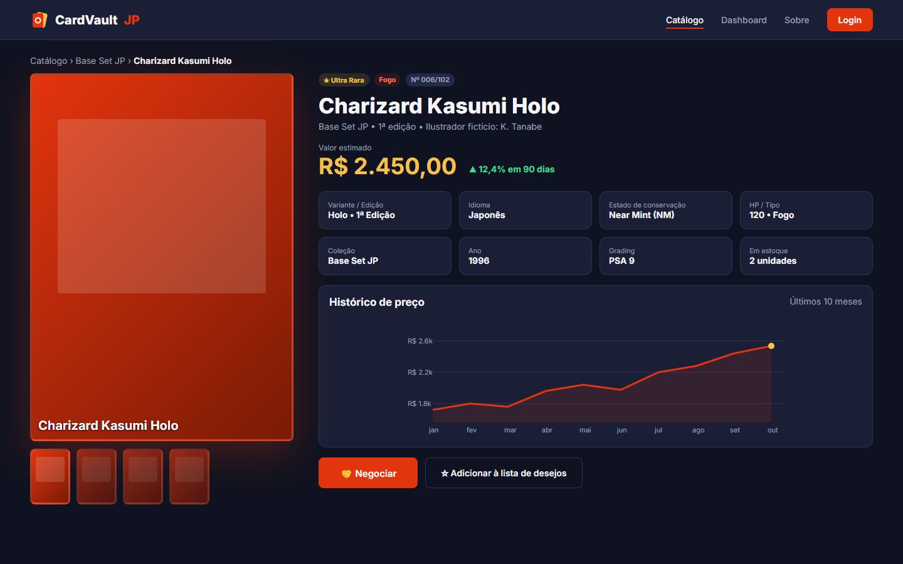
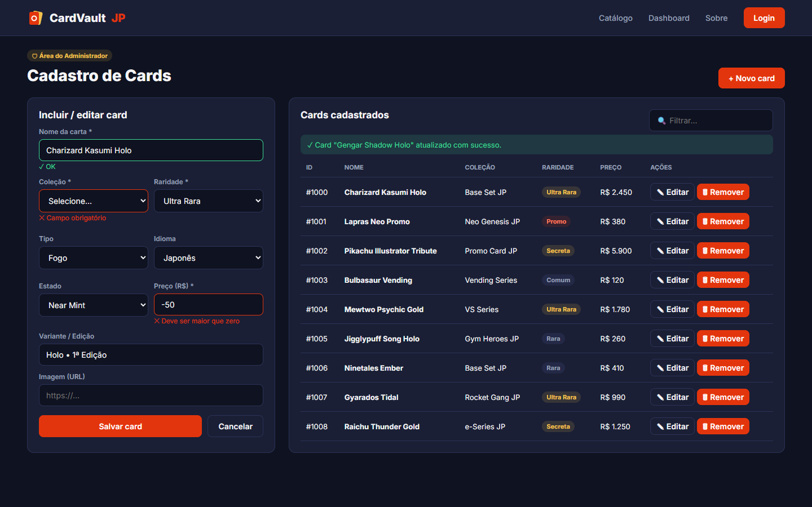
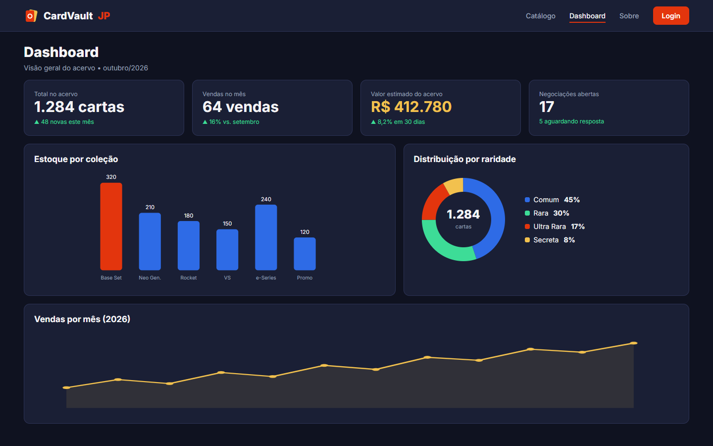
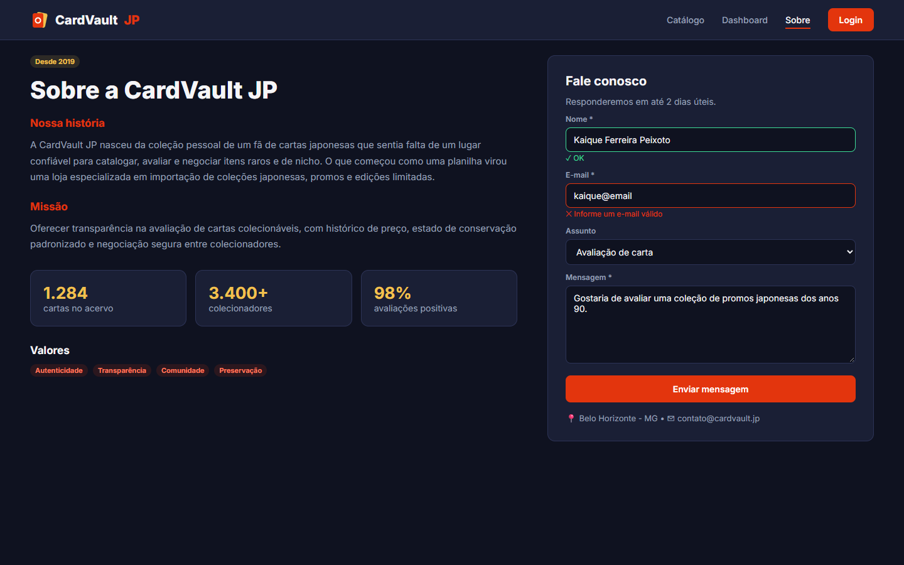

UNIVERSIDADE FUMEC
CURSO DE CIÊNCIA DA COMPUTAÇÃO
DESENVOLVIMENTO WEB FRONT-END
PROF. DÂNGELO SILVA MIRANDA
KAIQUE FERREIRA PEIXOTO
Trabalho 01 — Protótipo
Belo Horizonte
2026
CardVault JP — plataforma web para gestão, catalogação, avaliação e negociação de cartas colecionáveis.
O objetivo da aplicação é oferecer a colecionadores e lojistas um ambiente único para catalogar e avaliar cartas colecionáveis de Pokémon TCG, com foco em coleções japonesas e itens de nicho. A plataforma permite consultar o acervo com filtros, visualizar detalhes de cada carta (variante, idioma, estado de conservação e histórico de preço), iniciar negociações e, para o administrador, manter o cadastro de cards e acompanhar indicadores por meio de um dashboard.
A aplicação será desenvolvida em Angular, consumindo uma API REST simulada com JSON-Server, com controle de acesso por Route Guards, carregamento sob demanda de módulos (Lazy Loading) e versionamento com GitFlow e Conventional Commits.
| Código | Requisito funcional | Descrição |
|---|---|---|
| RF01 | Listagem de cards | Catálogo em grade com busca por nome e filtros por raridade, tipo e coleção. |
| RF02 | Detalhes do card | Página com imagem ampliada, atributos, variante/edição, idioma, estado de conservação, histórico de preço e botão "Negociar". |
| RF03 | Formulários com validação | Login, cadastro de usuário, cadastro/edição de cards e contato com validação de campos obrigatórios, formato de e-mail, tamanho de senha e valores numéricos. |
| RF04 | Route Guards | Proteção das rotas administrativas (cadastro e dashboard) conforme o perfil autenticado (Cliente ou Administrador). |
| RF05 | Lazy Loading | Módulos/rotas carregados sob demanda (ex.: área administrativa e dashboard), reduzindo o tamanho do carregamento inicial. |
| RF06 | Dashboard | KPIs (total no acervo, vendas no mês, valor estimado) e gráficos de estoque por coleção, distribuição por raridade e vendas por mês. |
| RF07 | API REST via JSON-Server | Operações de CRUD (GET, POST, PUT, DELETE) de cards, usuários e negociações sobre um arquivo db.json. |
| RF08 | Git / GitFlow / Conventional Commits | Versionamento no GitHub com branches main, develop e feature/* e mensagens de commit padronizadas. |
A identidade visual adota um tema escuro elegante, que valoriza as cores das cartas e remete a vitrines de itens de coleção.
| Elemento | Valor | Uso |
|---|---|---|
| Fundo | #0F1220 | Plano de fundo das páginas |
| Superfícies | #1A1F35 | Navbar, painéis, cards e formulários |
| Destaque | #E3350D | Botões principais, links ativos, erros de validação |
| Dourado | #F2C14E | Raridades (Ultra Rara, Secreta) e valores monetários |
| Texto | #F5F5F7 | Texto principal |
Tipografia: Inter (Google Fonts), pesos 400 a 800. Logo: texto "CardVault JP" acompanhado de um ícone original em SVG de duas cartas sobrepostas, sem uso de marcas ou personagens oficiais; as cartas do protótipo são retângulos genéricos com gradiente e nomes fictícios. Layout: navbar fixa no topo (logo à esquerda; Catálogo, Dashboard, Sobre e Login à direita), conteúdo em grade, cantos arredondados (botões com 8 px) e resolução de referência desktop de 1440×900 px.

Tela de entrada com abas "Entrar" e "Cadastrar" e seletor de perfil (Cliente ou Administrador), que definirá as rotas liberadas pelos Route Guards. Apresenta validação visual: campo válido em verde e campo inválido em vermelho com mensagem explicativa (senha com menos de 8 caracteres).

Grade com 12 cards exibindo nome, raridade, preço, coleção e tipo. Possui campo de busca, filtros por raridade, tipo e coleção e indicação dos filtros ativos. Os dados virão do endpoint GET /cards do JSON-Server.

Exibe a imagem ampliada da carta e miniaturas, atributos (variante/edição, idioma, estado de conservação, HP/tipo, coleção, ano, grading e estoque), valor estimado com variação, gráfico SVG de histórico de preço e o botão "Negociar", que inicia uma proposta de negociação.

Área restrita ao Administrador. Contém formulário de inclusão/edição de card com mensagens de validação (campo obrigatório e preço maior que zero) e tabela de cards cadastrados com ações de editar e remover, além de mensagem de sucesso após a operação.

Apresenta KPIs (total no acervo, vendas no mês, valor estimado do acervo e negociações abertas), gráfico de barras de estoque por coleção, gráfico de rosca da distribuição por raridade e gráfico de linha de vendas por mês, todos feitos em SVG/CSS, sem bibliotecas externas.

Página institucional com a história da loja, missão, valores e números, além de formulário de contato com validação (nome, e-mail, assunto e mensagem).
Kaique Ferreira Peixoto (trabalho individual).
Repositório: https://github.com/IsseiSenju/cardvault-jp
GitFlow: a branch main guarda apenas versões estáveis entregues; a develop integra o trabalho em andamento; cada funcionalidade é desenvolvida em uma branch feature/* criada a partir da develop (ex.: feature/prototipo) e integrada de volta com merge --no-ff, preservando o histórico da funcionalidade.
Conventional Commits: as mensagens seguem o formato tipo(escopo): descrição, em que o tipo indica a natureza da mudança (feat nova funcionalidade, fix correção, docs documentação, style, refactor, chore tarefas de manutenção). Commits usados neste trabalho:
feat(prototipo): adiciona tela de login e cadastrofeat(prototipo): adiciona tela de catálogofeat(prototipo): adiciona tela de detalhes do cardfeat(prototipo): adiciona tela de cadastro administrativofeat(prototipo): adiciona tela de dashboardfeat(prototipo): adiciona tela institucionaldocs(relatorio): adiciona relatório do trabalho 01chore(kanban): atualiza kanban do trabalho 01O protótipo foi desenvolvido em HTML e CSS estáticos, com resolução de referência desktop de 1440×900 px. As imagens de todas as telas estão no arquivo Trabalho_01_Prototipo_Kaique_Ferreira_Peixoto.pdf, entregue junto com este relatório.
Arquivos do protótipo: https://github.com/IsseiSenju/cardvault-jp/tree/develop/prototipo